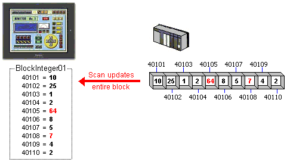
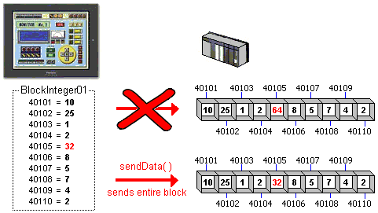
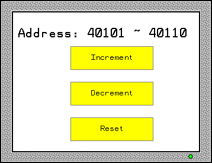
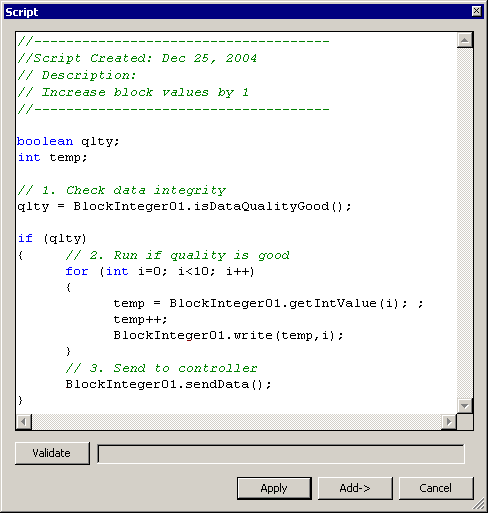

|
|
|
|
|
|
|
|
The following describes how block variables affect the communication process with equipment.
The data source for block variables is External, so it's scanned like any other external variable. The entire block is sent to the target machine on each scan cycle, whether there are no changes, changes to individual device addresses, or changes to the entire block.

When changing values in a block on the target machine, the change is made to a local copy of the block variable. The equipment contains the previous value, until you update the block with the script method BlockVariableName.sendData( ) or with the recipe send command. Because of the unique communication behavior of block variables, they are limited for use in Recipes, Scripts, Block Trend Graphs, and XY Graphs only. Block variables should be used mainly for data that remains static, such as Recipes and other configuration-type settings.

The following steps provide an overview of how to change values in block variables in script. For details about how to use block variables in scripts, see Section 18.9.1.6, Variable Methods.
Before you make any changes to block variables, first check the data integrity:
boolean DataIsGood;
DataIsGood = BlockInteger01.isDataQualityGood( );
Once the data integrity is qualified, run operations on the block variable.
You can copy the entire block into a local script array:
int[] tempArray = BlockInteger01.getIntValues( );
You can get the value of individual block elements:
int temp = BlockInteger01.getIntValue(0); // Get value from index 0
Write new values to individual block elements.
BlockInteger01.write(3600, 7); // Write 3600 to index 7
After writing new values to individual block elements, use the sendData method to write changes to the equipment.
BlockInteger01.sendData( );

Units, or elements, in block variables begin with element 0. When Block Elements = 10, element numbers range from 0 to 9.
After changing values in block variables, make sure you send the block variable to the equipment, otherwise changes are not reflected in the equipment.
This example uses the block variable defined in previous diagrams.

The panel contains 3 switches, each set up with Touch scripts. Increment increases the values in all the block elements by one, Decrement decreases all their values by one, and Reset sets all their values their initial values.
Here is the Touch script in the Increment switch.

1. Check data integrity
After declaring script variables, check the data integrity of the block variable. You should always check the quality of values before using them.
2. Run if quality is good
Once we verify there are no data errors cycle through each element in the block variable and increment its value.
3. Send to controller
After the value in each element in the block variable is increased by 1, write the data to the controller.